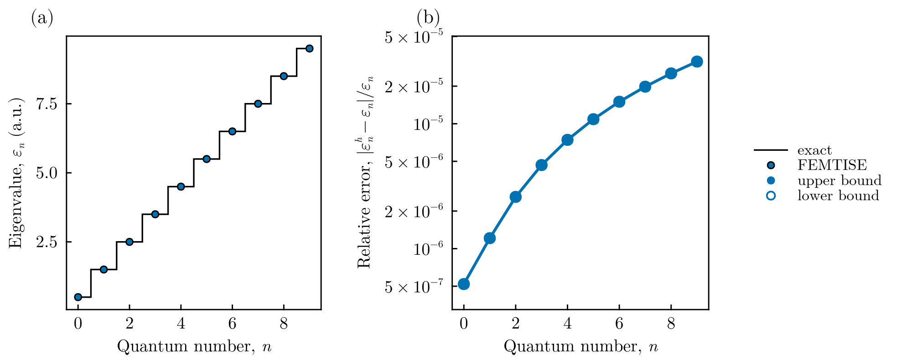
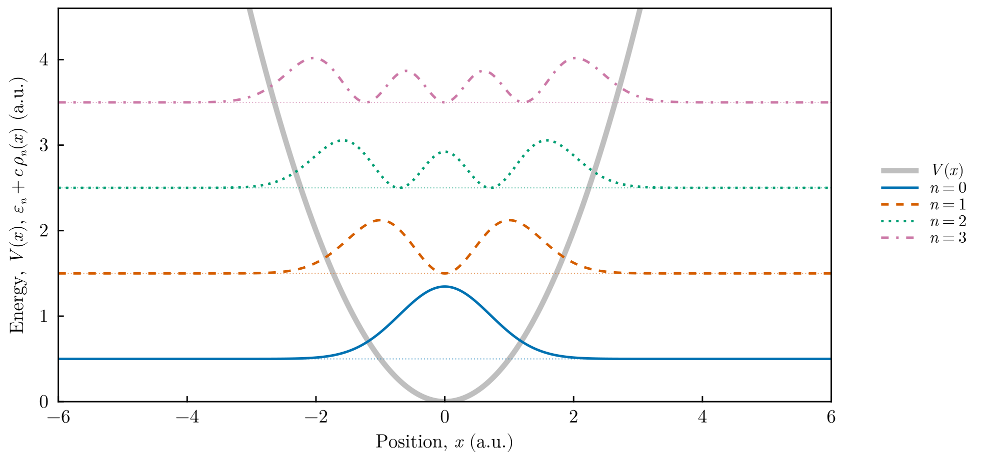

One-dimensional harmonic oscillator
This tutorial solves the harmonic oscillator with the input-file driver of FEMTISE.jl, compares the result with the exact spectrum and plots the eigenfunctions. In atomic units ($\hbar = m_e = 1$) the Hamiltonian is
\[\hat H = -\frac{1}{2}\frac{d^2}{dx^2} + \frac{1}{2}\,\omega^2 (x-x_0)^2, \qquad \varepsilon_n = \omega\left(n+\tfrac{1}{2}\right),\quad n = 0, 1, 2, \dots\]
All files are in src/isotropic_1d_harmonic_oscillator_potential/ of the FEMTISE_TUTORIAL repository.
1. The potential
adhoc_potential_function.jl defines the potential as a function of the mesh point x and a tuple of parameters:
function qho_1d(x, params::Tuple)
ω, x₀ = params
return 0.5 * ω^2 * (x[1] - x₀)^2
end2. The input file
input.dat asks for the 10 lowest levels (sigma = 0 lies below the ground state) with $\omega = 1$ and $x_0 = 0$, on the domain $(-50, 50)$ with elements of size $\Delta x = 0.1$:
full_path_name = ./output/qho1d
dom_type = s
nev = 10
dimension = 1D
sigma = 0.0
adhoc_file_name = ./adhoc_potential_function
potential_function_name = qho_1d
params_potential_types = f f
params_potential = 1.0 0.0
analysis_param = false
output_format_type = jld2 all
## ONLY FOR 1D EIGENPROBLEMS
L = 100
Δx = 0.1
## ONLY FOR 2D EIGENPROBLEMS
Lx =
Ly =
nx =
ny =
different_masses =
reduced_density =The meaning of every field is explained in the input file reference.
3. Running the tutorial
From the root of the repository (the first command is needed only once):
julia --project=. setup.jl
julia --project=. src/isotropic_1d_harmonic_oscillator_potential/run_tutorial.jlrun_tutorial.jl performs three steps:
# 1. solve (skipped if ./output already contains the results; use --rerun to force)
id, results = simulate("input")
ε, order = sorted_spectrum(results) # eigenvalues in ascending order
ϕ = results.ϕ[order] # eigenfunctions (finite element functions)
# 2. compare with the exact levels
exact = [ω * (n + 0.5) for n in 0:length(ε)-1]
# 3. figures (PDF + PNG in ./figures)
save_figure(plot_spectrum(ε; exact = exact), "figures", "qho1d_spectrum")
x = collect(range(-6.0, 6.0, length = 1201))
densities = [abs2.(sample_on_grid(ψ, x)) for ψ in ϕ]
fig = plot_densities_1d(x, densities, ε; potential = 0.5 .* x .^ 2, states = 1:4, scale = 1.5)
save_figure(fig, "figures", "qho1d_densities")simulate, sorted_spectrum and sample_on_grid are defined in tools/TutorialSimulation.jl. The plotting functions are in tools/TutorialFigures.jl.
4. Results

Spectrum. (a) The ten computed eigenvalues (markers) lie on the exact levels $n+1/2$ (steps). (b) Relative error. All eigenvalues are upper bounds (filled markers). The error grows with $n$ because higher states oscillate faster and are resolved by fewer elements per wavelength. It stays below $3.2\times10^{-5}$.

Eigenfunctions. Probability densities $\rho_n(x) = |\psi_n(x)|^2$ of the four lowest states, drawn at the height of their energies over the potential (thick gray line). The $n$-th state has $n$ nodes and extends to the classical turning points $x=\pm\sqrt{2n+1}$.
5. Going further
- Accuracy. The driver uses quadratic elements with a quadrature of degree 3. Halving
Δxreduces the error by a factor of about 16 (convergence as $h^4$). For certified upper bounds use the low-level interface with an exact quadrature (see the accuracy guide). - Other observables. Because
output_format_type = jld2 all,resultscontains the mesh, the measures and the finite element spaces, e.g.coord_second_moment(results.ϕ, results.USpace, results.Ω, results.dΩ, 1)returns $\langle x^2\rangle = n + 1/2$ for each state. - Parameter sweep. Set
analysis_param = 1 0.5 2.0 0.1andoutput_format_type = jld2 eigen(sweeps store only eigenvalues) to compute the levels as a function of $\omega$.